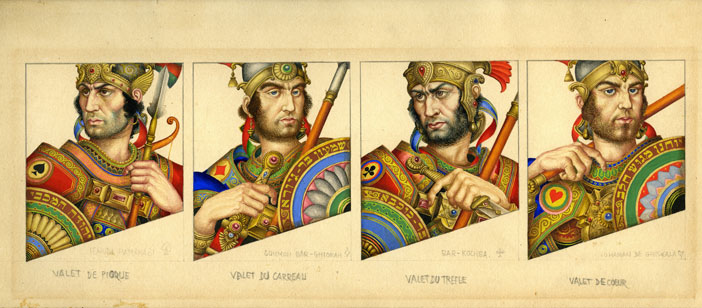
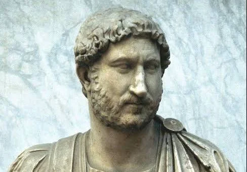

The uprising was unified under two legendary figures who provided both military and spiritual
direction.
Simon bar Kokhba (originally ben Kosiba) served as the charismatic military commander and political
leader.
He governed the rebel state with absolute authority, earning the title of Nasi (Prince). He was
strongly
supported by Rabbi Akiva, one of the most revered spiritual leaders in Jewish history. Rabbi Akiva
famously
proclaimed Bar Kokhba as the long-awaited Messiah, which inspired thousands of fighters to join the
cause.
Bar Kokhba

Historical artistic depiction of Simon bar Kokhba
Simon bar Kokhba (died 135 CE) was a Jewish military leader who led the Bar Kokhba revolt
against the Roman Empire between 132 and 135 CE.
He established a short-lived independent Jewish state, which he ruled as Nasi ("Prince" or
"President").
The prominent Jewish sage Rabbi Akiva gave him the surname "Bar Kokhba" (Aramaic for "Son of a
Star"),
viewing him as the messianic figure who would liberate Judea. After initial military successes
using guerrilla warfare,
his forces were ultimately defeated by a massive Roman counter-offensive led by Emperor Hadrian.
Bar Kokhba made his final stand and died at the fortress of Betar.
Today, he is remembered as a symbol of Jewish heroism and national resistance.
A classical illustration of Rabbi Akiva, the revolt's spiritual leader
abbi Akiva (c. 50–135 CE) was one of the greatest and most influential sages in Jewish
history,
recognized as a foundational figure of rabbinic Judaism and the Mishnah.
Rising from humble beginnings as an uneducated shepherd, he began his formal education at
the age of 40,
deeply encouraged by his devoted wife, Rachel. Through decades of relentless study,
he became a master of Jewish law, a brilliant legal scholar,
and a visionary leader who revolutionized biblical interpretation.
Rabbi Akiva famously served as the spiritual backbone of the Bar Kokhba revolt against the
Roman Empire.
Ultimately, he was executed by Rome for defying their bans on teaching Torah,
dying as a martyr with the words of the Shema on his lips, leaving behind a legacy of love
for Torah and ultimate devotion.
On the opposing side stood the Roman Empire, initially caught off guard by the strength of the
rebellion.
Emperor Hadrian viewed the revolt as a severe threat to imperial stability. After initial Roman
defeats,
Hadrian deployed his top military strategist, General Julius Severus, all the way from Britain to
take command.
Severus avoided direct, open battles and instead executed a ruthless war of attrition,
systematically
destroying rebel strongholds and starving out the resistance.
Emperor Hadrian

Roman marble bust of Emperor Hadrian, who suppressed the rebellion.
Hadrian (born Publius Aelius Hadrianus) was Roman Emperor from 117 to 138 CE and is remembered as
one of the
"Five Good Emperors" who presided over the empire's golden age.
Unlike his expansionist predecessor Trajan, Hadrian focused on consolidation, peace,
and securing the empire's vast borders, famously authorizing the construction of Hadrian's Wall
in Britain
. A passionate Philhellene, his deep love for Greek culture heavily influenced his patronage of
the arts
and architecture, leading to the rebuilding of the Pantheon in Rome and the construction of his
magnificent
villa at Tivoli. While his reign was marked by efficient administrative reforms and extensive
travel
across nearly every Roman province, it also saw the brutal suppression of the Bar Kokhba revolt
in Judea.
Roman military diploma naming General Sextus Julius Severus as governor.
Sextus Julius Severus was a distinguished Roman general and politician of the 2nd century AD,
recognized as one of Emperor Hadrian’s most capable military commanders.
After serving successfully as the governor of Roman Britain, where he oversaw major
defensive and administrative operations, he was urgently reassigned by Hadrian to
Judea in 134 AD to suppress the Bar Kokhba revolt. Rather than engaging the Jewish rebels in
risky,
direct open-field battles, Julius Severus deployed a highly effective scorched-earth and
war-of-attrition
strategy. By methodically isolating and besieging individual rebel strongholds,
cutting off supply lines, and systematically clearing the countryside,
he successfully crushed the rebellion by 135 AD, culminating in the fall of the fortress of
Betar.
In recognition of his decisive military triumphs and administrative competence,
he was later appointed governor of Syria,
solidifying his legacy as a premier enforcer of Roman imperial authority.